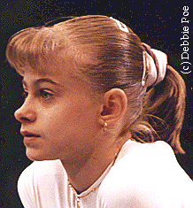

Alexandra Marinescu (ROM)
1995 Pre-Olympic AA
Champion
1996
Jr. European AA Champion
"It's very motivating for
me to be considered a leader."

-
Medal Total
- Olympic Games: 1 Bronze
- World Championships: 2
Gold, 1 Silver
|
Alexandra was born on March 19,
1981 in Bucharest. She trained with the Romanian junior national team in
Bucharest until she was transferred to Deva to train with the senior team.
Her career was cut short in early 1998, when she had to retire from gymnastics
because of scoliosis. She is finishing her studies in Deva.
Competition Results
- 1993
ITA-ROM-RUS: 19th AA
Jr. Balkan Championships: 2nd AA, 1st B, 1st FX
ROM-GER Jr. Dual Meet: 1st AA
-
- 1994
- Balkan Championships: 1st UB
Blume Memorial: 10th AA
- Jr. European Championships: 1st AA, 1st B, 3rd FX, 6th UB
- International Championships of Romania: 2nd AA
-
- 1995
- FRA-ROM Dual Meet: 1st Team, 3rd AA
- Hapoel Games: 1st AA
- Pre-Olympics: 1st AA
- ROM-GBR-AUS Meet: 1st Team, 1st AA
- International Championships of Romania: 1st B
- Subway World Challenge: 4th AA
- World Championships: 1st Team, 4th
UB, 4th B
-
- 1996
- Australia Cup: 6th AA, 2nd B, 4th FX
Catania Cup: 3rd AA, 2nd B, 4th FX, 5th V
- Cottbus International: 3rd FX, 5th B, 8th UB
- Gander Memorial: 2nd AA
- Jr. European Championships: 1st AA
- Olympic Games: 3rd Team, 8th B
- Swiss Cup: 2nd B, 3rd UB, 3rd FX
- World Championships: 2nd B
-
- 1997
- American Cup: 5th AA
ITA-ROM-UKR Meet: 1st Team, 5th AA
ROM-GER Dual Meet: 1st Team, 3rd AA
- ROM Nationals: 3rd AA, 3rd V, 3rd FX
- World Championships: 1st Team
-
- 1998
- American Cup: 5th AA
-
This page was last updated on March 17, 2004.
© Gymn Forum
-